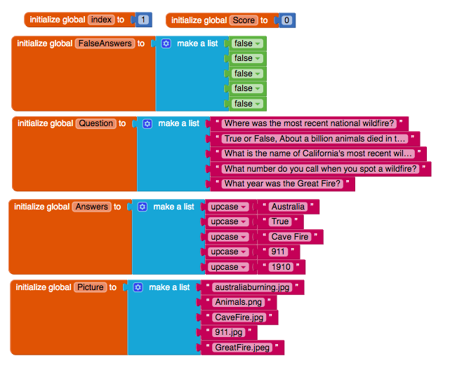

1. Describe in your own words, with a specific example from Logo, how our choice of abstractions (commands) in this lesson provides us with the ability to solve problems that couldn't be solved with the abstractions (commands) used in Logo Part 1.
Our choice of abstractions in this lesson provides us with the ability to solve problems that couldn't be solved with abstraction used in Logo Part 1 by being able to turn a certain degree in Logo Part 2 has create circles and all these different shapes giving users flexablility of drawings users want to create. An example would be a circle, in the first Logos you were only able to draw shapes with corners but in Logo part 2 you were able to draw things ranging from circles to crazy random like our spiral staircase me and my partner created.
1. (POGIL) Define a pseudocode algorithm that will efficiently play the guessing game.
Binary Searching would be the most efficiently way, since it splits between the value in half, which is the most efficient way. It uses the middle number and add the average number of the lowest and the highest number. It will adjust the middle each guess,depends on the target.
2. (POGIL) To guess a number between 1 and 100, what's the maximum number of guesses your algorithm would take?
The maximum number of guesses our algorithm would take would be SEVEN.
3. (POGIL) To guess a number between 1 and 500, what's the maximum number of guesses your algorithm would take?
The maximum number it would take would be nine guesses.
4. Suppose you have a deck of cards and you want to find the Ace of Spades. If the deck is shuffled, which is the best search algorithm to use and why?
The best search algorithm to use would be linear search or bubble sort. I would use this algorthm because finding one card it'll be easier to individually search through the whole pile than to fully sort them then find the card.
5. Give an example of a search problem you encounter in everyday life. Does it use sequential, binary, or some other search algorithm?
An everyday example of a search problem I encounter is Snapchat. When you add new friends on snapchat itll do sequential search when you want to send them anything, like once you add them itll put them into a ABC list from last names to first names.
1. Bubble and Merge Sort are referred to as comparison sorts because the values of the two pieces of data are compared during each step. Why are the radix and bucket sort not comparison sorts?
Radix and Bucket Sort are not comparison sorts because they are not comparing cards together, instead they are taking the cards and sorting them in a group depended on the number.
2. Which sort do you think would be the fastest if you had to sort more than one deck of cards? Why?
I think bucket sort would be the fastest because if you have more than 2 same number cards you can just sort them into "buckets" and merge them together later depended on the number making it faster than comparing all the cards until they are all sorted.
1. Describe the significance of the global variable index. How is indexing used with lists in this app?
The significance of the global variable index is it helps locate items in a list. Indexing is used in this app by helping us locate questions and display it in order when we click the NextButton.
2. Describe how parallel lists were used in this app. Why was the parallel structure of the lists necessary?
Parallel list are used in this app by locating items from multiple list and displaying it all at the same time in the order given. Parallel structure of the list was necessary in our app because we needed to display questions, pictures, and answers that match each other all at the same time.
3. Include a screenshot of the code that added your extra question (exercise 4) AND explain why the code for the buttons worked without any changes after the addition of the extra question.
The code for the button works without any changes after adding an additional question because the list for this code is parallel, also when we click on buttons is depended on the "length of the list" and not depended on each individual code.